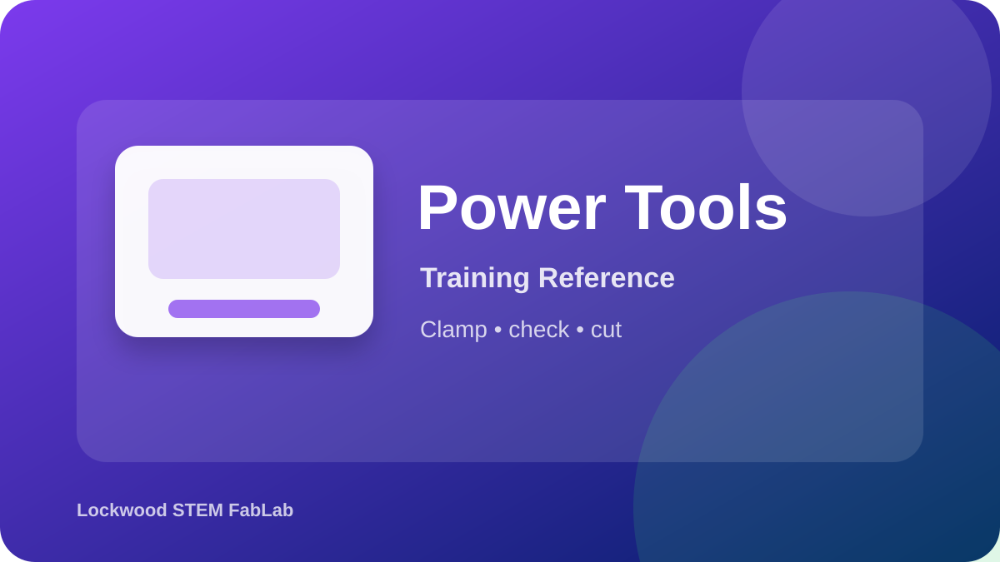

The miter saw is used for accurate crosscuts and angled cuts. It is a high-risk tool and must be instructor supervised.
Open official product/source page
This page prepares you for the hands-on check. Passing the quiz does not replace the instructor sign-off.
Use these visuals to connect the training steps to what you will see in the FabLab.
Use this image to identify the correct tool, major features, and safe handling areas before your hands-on check.
Confirm the workspace is clear, required PPE is ready, and the tool is set up exactly as directed.
Inspect the work, clean the area, and report anything unusual before leaving the station.
Review PPE, safe hand position, and blade-stop habits.
Open video on YouTube| What You Notice | Best Response |
|---|---|
| Material shifts during cut | Release trigger, hold position safely, wait for blade stop, and notify instructor. |
| Blade binds | Stop and wait for full stop; do not force the cut. |
| Cut line inaccurate | Reset material and support before cutting. |
| Offcut near blade | Wait for blade to stop before removing anything. |
| Long board unsupported | Add support before cutting. |
When should material be removed?
Who must approve miter saw use?
Use these visual references to identify the equipment and review the workflow before using the tool.
Equipment overview
Setup checkpoint
Safe cleanup
Use these videos as support before your hands-on classroom demonstration. Your teacher’s directions and FabLab safety rules always come first.